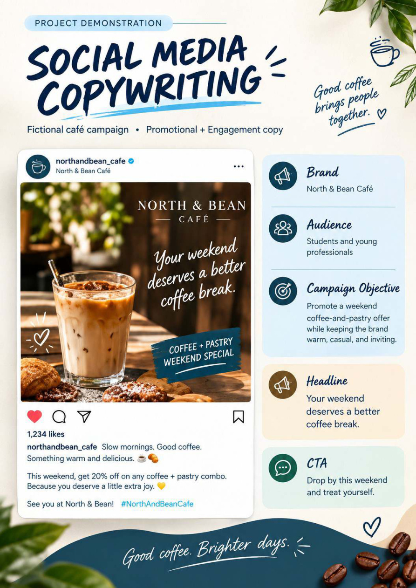
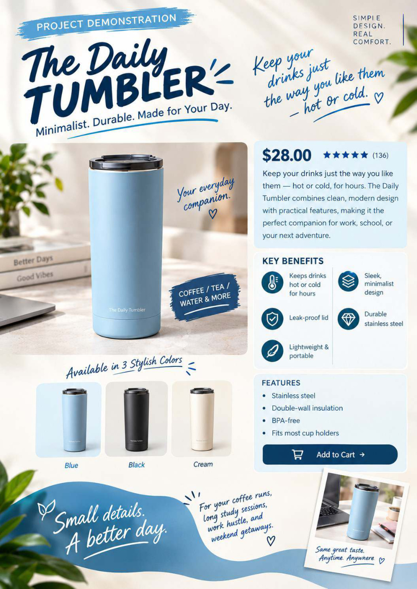
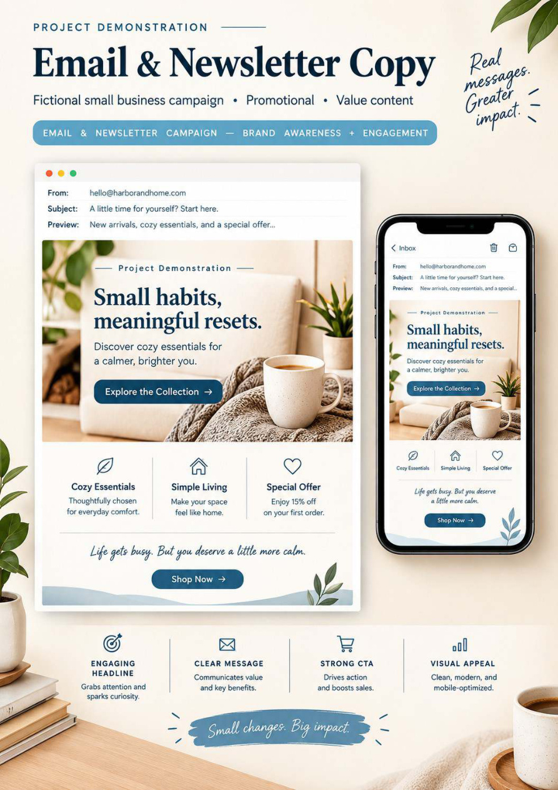
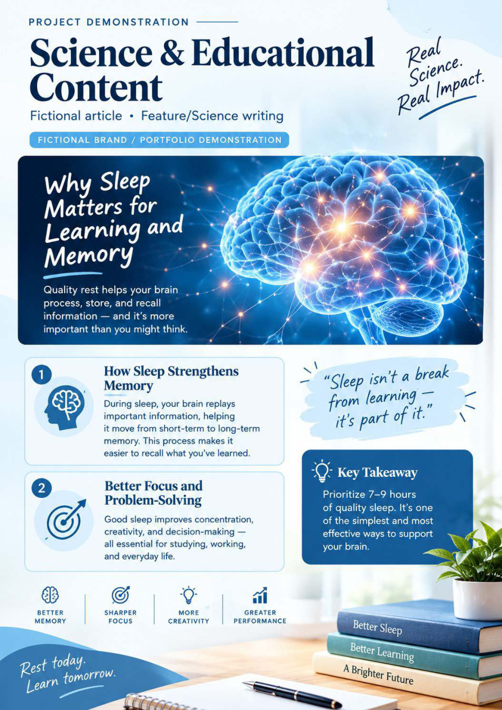
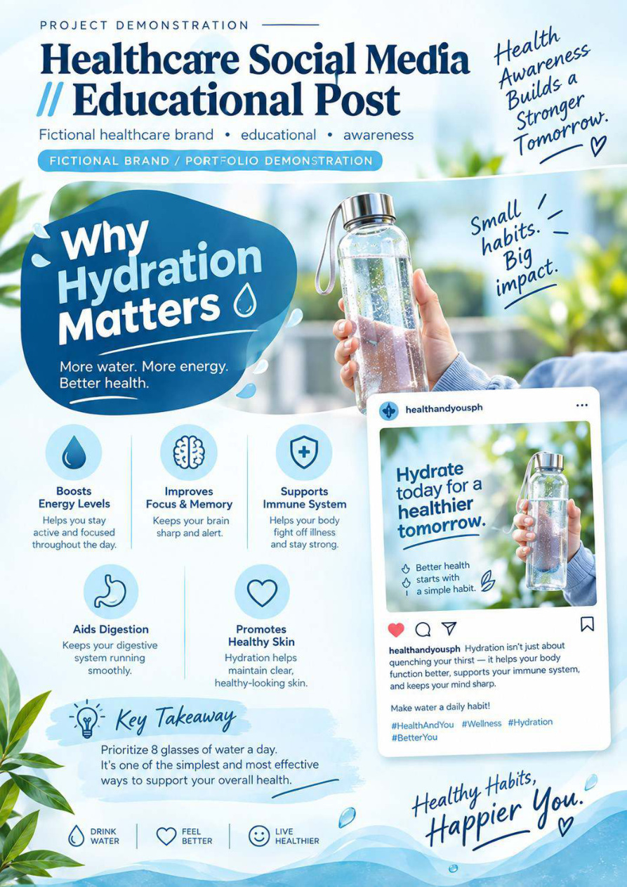
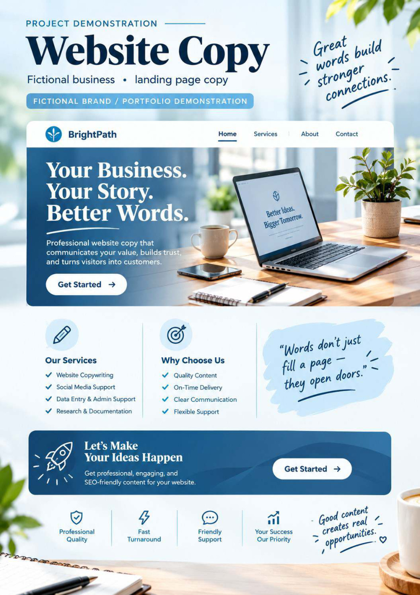
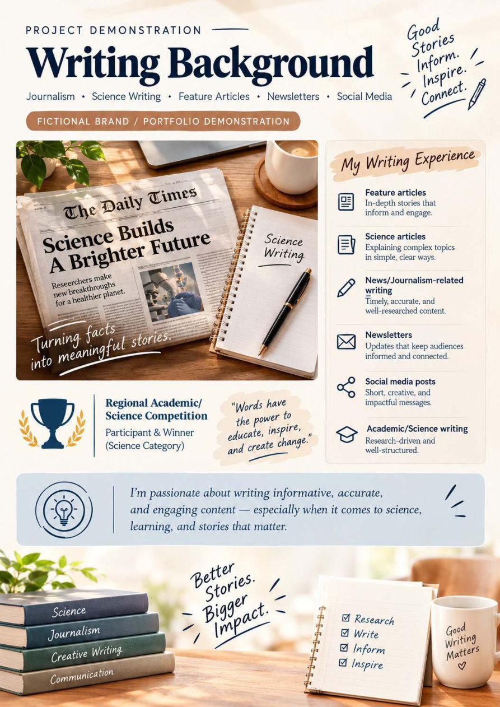

01 / ORGANIZE
Administrative Support
Keep everyday tasks and information structured, easy to find, and ready to use.
- Document formatting
- File and folder organization
- Task and calendar organization
- Checklists and record keeping
REMOTE SUPPORT · DIGITAL OPERATIONS
I'm Kim Xyro Sernal — a detail-oriented professional transitioning into Virtual Assistance, bringing experience in customer service, technical support, and quality-focused operations.
I help keep everyday work moving through organized information, dependable task execution, professional communication, and smart digital tools.
DETAIL-ORIENTED. PROCESS-FOCUSED. TECH-ADAPTABLE.
01 — A LITTLE ABOUT ME
My professional background spans production operations, customer service, and technical support. Across these roles, I learned to follow procedures carefully, communicate clearly, document accurately, and stay focused on quality.
At International Wiring System, I worked in a process-driven production environment. At iQor and Alorica, I supported customers, used digital systems and knowledge resources, and followed structured troubleshooting and escalation procedures.
I'm now building on those strengths as I transition into remote administrative support and Virtual Assistant work. I value clear instructions, thoughtful organization, confidentiality, and checking the details before work is delivered.
02 — HOW I CAN HELP
Service areas I'm prepared to support through my current skills, transferable experience, and ongoing practice.
01 / ORGANIZE
Keep everyday tasks and information structured, easy to find, and ready to use.
02 / MAINTAIN
Organize records with a focus on consistency, readability, and accuracy checks.
03 / DISCOVER
Gather relevant information and arrange it in a clear, useful format.
04 / SIMPLIFY
Help make digital workspaces more orderly and easier to navigate.
05 / CONNECT
Bring a customer-focused approach to written communication and issue handling.
06 / ENHANCE
Use AI as a practical assistant—with human review and fact-checking built in.
These are the original visual samples from my 11-page portfolio PDF. Select any sample to open a larger view.
03 — THE VALUE I BRING
A combination of hands-on workplace experience and a growing digital toolkit.
My production background taught me to inspect work, follow standards, and pay attention to small details that matter.
Customer support experience helped me listen to concerns, communicate professionally, and follow resolution processes.
I value clear records, structured workflows, and repeatable steps that make tasks easier to track and complete.
I continue developing my remote-work capabilities and exploring how digital and AI tools can support useful work.
04 — SKILLS & TOOLKIT
Tools and competencies identified in my background. Experience and proficiency vary by tool and task.
Google Workspace · Google Sheets · Microsoft Office · Excel
Google Meet · Zoom · Slack
Trello · Notion · Cloud file management
Canva · ChatGPT · Generative AI tools
05 — PROFESSIONAL EXPERIENCE
Real workplace experience that informs the way I approach support, communication, and quality.
Alorica
iQor · Seasonal / Fixed-term
International Wiring System (IWS)
06 — MY PORTFOLIO SAMPLES
These are the original visual samples from my 11-page portfolio PDF. Select any sample to open a larger view.

Sample promotional social content with a caption, brand tone, audience, and call to action.
View full sample ↗
A product-focused layout presenting benefits, key features, and promotional messaging.
View full sample ↗
A sample newsletter concept with a clear message hierarchy, supporting content, and CTA.
View full sample ↗
An educational infographic concept that organizes learning points into a reader-friendly format.
View full sample ↗
A health-awareness post concept using concise educational messaging and visual structure.
View full sample ↗
A sample homepage structure with value proposition, service highlights, and conversion-focused sections.
View full sample ↗
A sample editorial layout showing written-content presentation and supporting information.
View full sample ↗Profile and strengths · services offered · skills and tools · experience and professional background.
All items are portfolio demonstrations, not claimed client engagements. Brand examples shown in the samples are fictional concepts.
07 — EDUCATION & DEVELOPMENT
I’m continuing to develop my knowledge of digital tools, AI concepts, and productivity workflows alongside my workplace experience.
EDUCATION
STEM Strand · 2021–2023
TRAINING · IN PROGRESS
TESDA Online Program — in progress, as listed in my resume.
CONTINUING DEVELOPMENT
Azure AI and generative AI coursework, AI prompting, automation concepts, and AI-assisted productivity.
08 — MY WORK PROCESS
A clear workflow helps set expectations and keeps the task moving.
Clarify the task, goals, instructions, and deadline.
Break work into manageable steps and arrange the information needed.
Complete the work using suitable tools and agreed procedures.
Check accuracy, prepare the final output, and communicate completion.
09 — GET IN TOUCH
If you’re looking for dependable support with administrative tasks, customer communication, information organization, or AI-assisted productivity, I’d be glad to hear about your needs.
Use the email button to send your message directly.